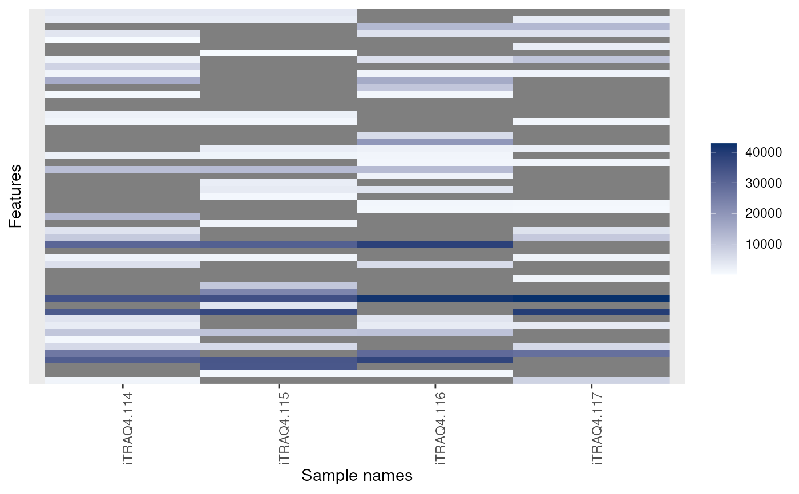
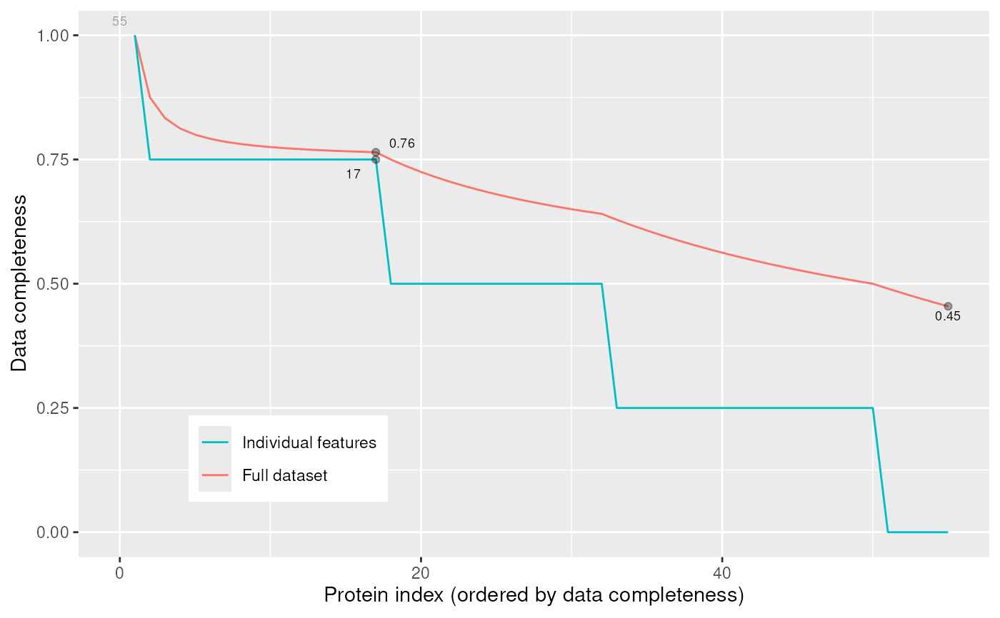

plotNA-methods.RdThese methods produce plots that illustrate missing data.
is.na returns the expression matrix of it MSnSet
argument as a matrix of logicals referring whether the corresponding
cells are NA or not. It is generally used in conjunction with
table and image (see example below).
The plotNA method produces plots that illustrate missing data.
The completeness of the full dataset or a set of proteins (ordered by
increasing NA content along the x axis) is represented.
The methods make use the ggplot2 system. An object of class
'ggplot' is returned invisibly.
signature(x = "MSnSet")
dim(x)
specifiying if respective values are missing in the
MSnSet's expression matrix.
signature(object = "MSnSet", pNA = "numeric")
MSnSet instance. pNA is a
numeric of length 1 that specifies the percentage
of accepted missing data values per features. This value will be
highlighted with a point on the figure, illustrating the overall
percentage of NA values in the full data set and the number of
proteins retained. Default is 1/2.
See also the filterNA method to filter out features with
a specified proportion if missing values.
#> iTRAQ4.114 iTRAQ4.115 iTRAQ4.116 iTRAQ4.117 #> X1 TRUE TRUE TRUE FALSE #> X10 TRUE TRUE FALSE FALSE #> X11 FALSE FALSE TRUE TRUE #> X12 FALSE FALSE FALSE TRUE #> X13 FALSE TRUE FALSE TRUE #> X14 FALSE FALSE TRUE TRUE#> #> FALSE TRUE #> 99 121image(msnset)plotNA(msnset, pNA = 1/4)